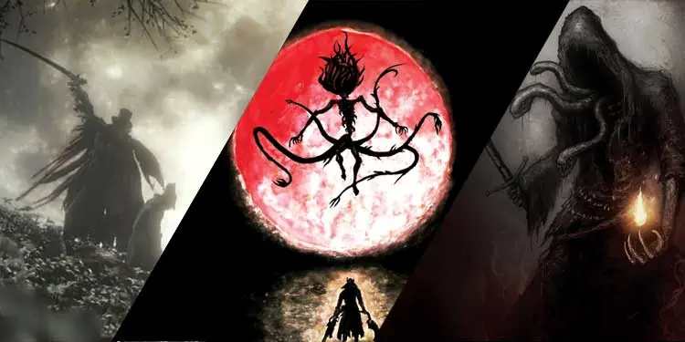

Bosses
Every boss in Bloodborne has a unique design and mechanisms. They are fierce, horrifying, and certainly a lot stronger than you. These bosses pose the biggest threat when it comes to progressing through the levels and act as the gatekeepers standing between you and the next stage. The bosses in this game are built differently and can be found at various stages throughout the game. They also drop unique items when you defeat them, making the rest of the journey easier as you go. Some of these bosses are optional and you do not really need to beat them in order to progress forward while some of them are mandatory. Here is the complete list of all the bosses in Bloodborne in the first to last order.
Father Gascoigne is a brutal killer equipped with a long two-handed axe and a gun. You can find him in Oedon’s Tomb at Central Yharnam. He can move very fast and be extremely dangerous if he gets close to you. He has two modes, and his attacks depend on the mode you’re fighting him. He can perform various combo attacks that can be fatal. He also uses his gun whenever he gets a chance. Dodging his attacks is a good way to counter him. However, when he transforms into his second form, he becomes faster and attacks more rapidly, causing mayhem everywhere. He drops an item called Oedon Tomb Key when you defeat him.
You’ll encounter Vicar Amelia in Great Cathedral at Cathedral Ward. She is a large animal-like creature who performs pure melee attacks with her hands. She uses her long and large hands to attack you, and sometimes she even uses both her hands to land a powerful blow on the ground, sending small shockwaves in all directions. One annoying thing about Vicar Amelia is that whenever her health bar falls below 50%, she will start running away from you and use her self-healing power. Whenever she uses this power, she will stand still, giving you a perfect opportunity to land a powerful strike. Her body will glow brightly whenever she uses healing. Due to her healing ability, it can be very difficult to beat her in the early game.
You’ll have to fight against multiple bosses this time around, three, to be exact. They aren’t particularly strong, but they can be pretty annoying. They move together, but they have different speeds, so you can easily separate them. These three bosses each have their own abilities and strengths. One of them uses magic, while the other two are swordsmen. They have their own health bar, and if one of them is in very low health, they will transform and use more powerful attacks. If you manage to defeat two of them, the last remaining boss can summon three giant snakeheads from the ground that will attack you randomly for massive damage. If you manage to defeat all three enemies, you will obtain Grave Lantern and Blood Rapture Rune.
This boss can be found when you jump into the Moonside Lake located at Byrgenwerth. He can use different powerful abilities and summon baby spiders to follow and attack you. The spiders are slow but can hit quite hard if one of them manages to land an attack. After you’ve successfully landed a few attacks on the boss, he will curl up and teleport to another location. After teleporting, he will summon more of his babies to attack you. The babies will follow you relentlessly, and getting tangled with them will only drag out the battle. Rom can also use different abilities like causing a meteor shower, explosions, or rolling towards you with his big body. Defeating this boss will reward you with Kin Coldblood.
Every boss in Bloodborne is spooky and terrifying, but this one tops the chart even for me. You can find him in Yahar’Gul Chapel at the Yahar’Gul Unseen Village. This guy pops right out of the moon and begins his attack like a madman. He is huge, has lots of limbs, and has a number of physical and magical attacks that can cause a lot of damage if you get hit by them. He is very slow, though. So if you’ve been playing for some time and have good control, you can pretty much dodge all of his attacks. He can also shoot acid from his mouth when he loses most of his health bar. You can obtain an item called Yellow Backbone after defeating this boss.
Micolash is very tricky and smart. He is also very fast; at running away, that is. However, he is one of the tankiest bosses you’ll face in this game. He usually hides in the fog created by his magic and summons underlings to fight for him. However, he can be very dangerous if he decides to fight for real. He can be found in Middle Morgo’s Loft. The area in which this fight takes place is pretty big, and you’ll have to move around quite a bit. Micolash is a powerful boss who can use both magical and physical attacks. He can create walls of fog to obstruct your vision and summon skeletons and minions that will fight for him. When he decides to fight for real, though, he can shoot tentacles from his hands and cast magic as well. You can obtain an item called Mensis Cage after defeating him. You also get access to higher levels of the Loft.
Mergo’s Wet Nurse can be found inside the Nightmare of Mensis. She is large and has multiple arms and wings coming out of her back. You can constantly hear a baby crying in the background when you face off against her. She has long blades attached to all of her arms. She doesn’t have a long reach, and she usually stays in the same place for a long time. But her attacks are very powerful, which makes it quite difficult to approach her. She can also create clones to attack you. An item called One Third of Umbilical Cord is dropped when you defeat her.
Gehrman is the final boss in the Bloodborne game. He is huge, ruthless, and the most powerful boss you’ll face in this game. He can be found at the cemetery of the Hunter’s Dream. He uses a long scythe as his main weapon, but he can also break it down to use it as a blade. He also occasionally shoots you with his gun. Being the final boss, he can be very difficult to deal with. He has a long reach, and his attacks are very powerful as well. He will constantly move and attack you with his scythe until he kills you or makes you spend all your healing potions. After that, he will kill you like an ant. When he loses around half of his health, he goes into an enraged state. In this state, he becomes much faster and stronger. You will acquire Old Hunter Badge after killing him.
Cleric Beast is the first boss you’ll face in Bloodborne. As this will be your first boss, it will be quite a challenge to defeat him. You will find him on the Great Bridge in Central Yharnam. He is huge, fast, and has a number of moves that can easily kill you if you get hit. You need to react very quickly and counterattack when you get a chance if you ever want to beat this guy. He has a couple of weak points that you can target to deal more damage. But you need to find those weak points by yourself. When you defeat Cleric Beast, he will drop a rare item called Sword Hunter Badge.
You can find this boss in the Church of the Good Chalice at the Old Yharnam. He looks very creepy, but he won’t come at you unless you get too close and provoke him. His attacks are very quick, and he won’t hesitate to charge at you with his long hands. This guy also has another form of attack where he starts to shoot poison from his body. He becomes more agile as he loses more of his health. His poison attacks can be lethal so carrying some antidotes is always a good thing when you’re about to fight him. He drops an item called Pthumerian Chalice after being defeated.

You will encounter the Witch in Witch’s Abode at the Hemwick Charnel Lane. The Witch doesn’t fight alone, and she will continuously summon her henchmen to fight you. These henchmen are slow, but they can deal powerful blows if they ever catch you. The Witch will stay invisible most of the time, and you can only see her if you get near her. One piece of advice, though, is you can always find her at one of the corners of the room. After you fight her for a while, you’ll soon discover that there are actually two of them. They also start to summon more minions when they are low on health. You don’t need to worry about that, though, because when you defeat both the witches, their minions will disappear with them too.Rune Workshop Tool and Bloodshot Eyeball are the items you can get by defeating the Witch. You will also be able to use runes after you defeat her.
You can find Darkbeast Paarl in The Graveyard of the Darkbeast at the Yahar’gul, the Unseen Village. He is huge, and most of his attacks have lightning, causing you to take massive damage when you get hit. Most of his attacks are melee and are fairly simple to dodge. But when he starts to lose his HP, he will unleash powerful waves of lightning with each attack. These attacks are very powerful and can easily kill you with some swings if you can’t dodge them in time. Defeating him will unlock shortcuts to new areas of the game. You can obtain an item called Spark Hunter Badge from this battle.
Logarius is a large boss utilizing both magic and physical attacks. He can be found at the top of Forsaken Cainhurst Castle. He uses a long scythe and a sword as a weapon and wears a crown on his head. This boss is exceptionally good at combat and uses a number of physical and magical attacks to damage you. As you keep hitting him and damage him more, his attacks become more unpredictable and fast. However, his magic attacks are the ones you should be afraid of because when he decides to start using magic, things can go horrible for you. He drops an item called Crown of Illusions when you defeat him. You also gain access to Vilebloods and become one of the Vileblood yourself after you’ve defeated this boss.
Amygdala is a giant beast with multiple arms. She can be found inside The Nightmare Frontier and uses multiple forms of attacks. She can swing her arms to deal damage, jump and stomp on you as well as shoot lasers from her head. She also grabs you if you stay too close to her for a long time. You can acquire Ailing Loran Chalice by defeating her.
The Celestial Emissary is a bunch of alien-looking creatures who appear in groups. They all share the same HP pool and can be found in the Upper Cathedral Ward. They all have similar movement speeds and attack patterns. They will chase you until they get near you and swing their arms, which can damage you. After some time, a bigger one of them appears, which deals more damage if you get hit by his attacks. He will also stomp the ground and squash you if you get too close to him. When their health decreases rapidly, he can shoot arcane magic at you that will chase you until the impact. You can get a Communion Rune if you defeat him.
You can find Ebrietas, Daughter of the Cosmos, in the Upper Cathedral Ward. She is very large in size and has lots of tentacles that she uses for combat. She is the last boss in the Upper Cathedral Ward. She primarily uses her tentacles to swing around and cause damage. However, she can also cast magic sometimes. All of her attacks are very powerful. She swings her tentacles quite often, and it can be very dangerous if you are near her. She can also launch her head on the ground to deal massive damage. You’ll want to avoid this attack at all costs. She will also use magic to rain down lasers at you, so you need to keep an eye for that as well. The reward for this boss is Great Isz Chalice.
This is an optional boss that can be unlocked if you have three One Third of Umbilical Cord. She appears after you’ve slain Gehrman, the First Hunter. If you can see her on your screen, then you own all three items, and she is now the final boss. Being the final boss herself, she can also give you quite a hard time. She mainly uses her tails and claws to attack you. However, she also uses some magic attacks occasionally. Getting hit by her magic attacks can literally make you cry because then, you won’t be able to use any healing potion for a certain time. So try to dodge it when you see it coming. Defeating her will reward you with 230,000 Blood Echos.